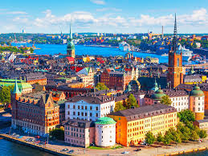
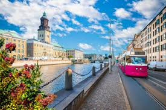
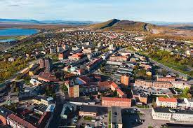
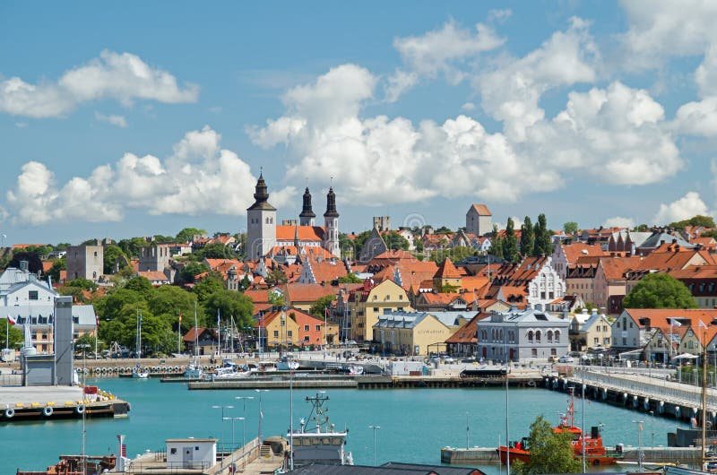
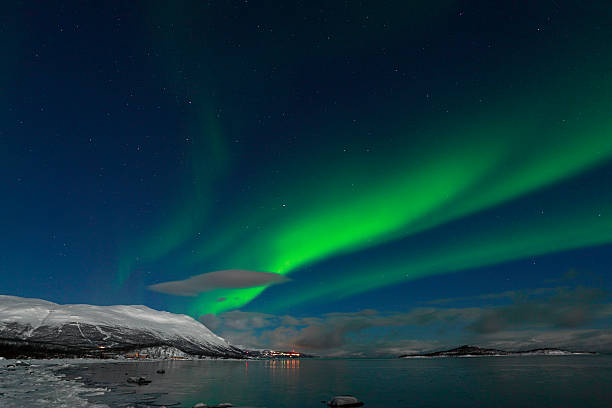
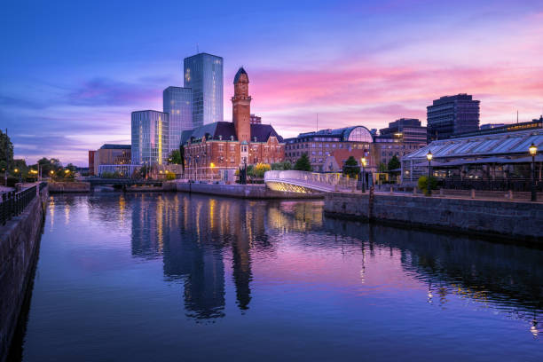

Sweden's capital city, spread across 14 islands, known for its royal palace, museums, and modern design.

A charming port city on the west coast with canals, green spaces, and Liseberg amusement park.

Located in Swedish Lapland, it's a gateway to the Northern Lights and the famous Icehotel.

A UNESCO World Heritage Site with medieval walls and cobbled streets on the island of Gotland.

A paradise for hikers and nature lovers, especially famous for clear skies and Northern Lights viewing.

A modern city connected to Copenhagen by the Øresund Bridge, known for sustainability and architecture.